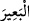

onların çenelerine kadar uzanır. Öyle ki bu halka ve zincirler onların çenelerine
bağlanmıştır ve başlarını hareket ettirmeye, sağa-sola çevirmeye izin vermez. Halkanın
çeneye ulaşması ya halkanın göğüsle çene arasını dolduracak şekilde kalın ve geniş
olmasıdır ki bu durumda halka çeneye ulaşır ve başı yukarı kaldırır. Yahut elleri boyuna
toplayan gerdanlığın iki tarafının birleştiği yerde çenenin altında halkası vardır. Bu
gerdanlık ile halkadan çeneye doğru dışarıdan elin bağını birleştiren kazığın başı o
halkaya girdirilir. Bu yüzden o kişinin başını hareket ettirmesine izin vermez.
“ gözü aşağı çevirerek başı yukarı kaldırmaktır. Deve su içip kandığı için,
havuzun suyu soğuk olduğu için ya da suyun tadı nahoş olduğu için havuzdan başını
kaldırınca “ denir. “ ” devenin başını arkaya bağladım
demektir. Halka darlığından dolayı başı yukarı kaldırılmış olarak bırakınca “" denir.
Bazıları der ki: Âyetin lafzı mâzî/geçmiş zaman ise de bu durum,
“O inkâr edenlerin boyunlarına demir halkalar takarız.”
(Sebe, 34/33) âyetinde olduğu gibi onlara âhirette yapılacak muâmeleye işârettir.
Bundan dolayı fukaha: ‘Kölesinin boynuna halka takmak mekruh görülmüştür. Çünkü bu
cehennem ehline verilen bir cezâdır.’ demişlerdir.
Fakih (Ebü’l-Leys) der ki: “Bizim zamanımızda kölenin kaçmasından korkulduğunda
böyle yapmak âdet olmuştur. Bağlamak ise mekruh değildir. Çünkü bağlamak, âsî ve
azgınlar hakkında müslümanların sünnetidir. Bu husus böyledir.
Cumhur der ki: Âyette kâfirlerin çoğunun inkârda kararlılıkları, ondan
vazgeçmemeleri, hakka iltifat etmemeleri ve boyunlarını haktan yana çevirmemeleri
hâlini; başlarına demir halkalar geçirilen, bu halkalar çenelerine kadar ulaşan, başları
yukarıda, gözleri aşağıda oldukları halde kalakalmış kimselerin haline temsil ve teşbih
edilmiştir. İşte bu kâfirler hakka dönüp iltifat etmezler. Boyunlarını ve başlarını haktan
yana eğmezler. Neredeyse hakkı hiç göremezler ve onun tarafına bakamazlar.
Râğıb der ki: “Bu yüzden kafaları yukarı kalkıktır.” ifâdesi, kâfirleri deveye temsil
ve teşbih etmektir. Yine onları hakka boyun eğmekten doğru yolu kabul etmek için iz’an
ve vicdandan ve Allah yolunda infaktan yüz çevirmekle vasfetmektir.
Mesnevî’de der ki:
Allah “boyunlarına halkalar geçirdik...
Bu yüzden kafaları yukarı kalkıktır.” buyurdu.
Bu zincirler, bize dıştan değildir.
Bu, gizli bir bağdır ama demirden beter.
Demir bağı, ancak balta kırar...
Demir bağı kırmak, kaldırmak ne de olsa yine mümkündür.
Fakat görünmez bağa kimse çare bulamaz.